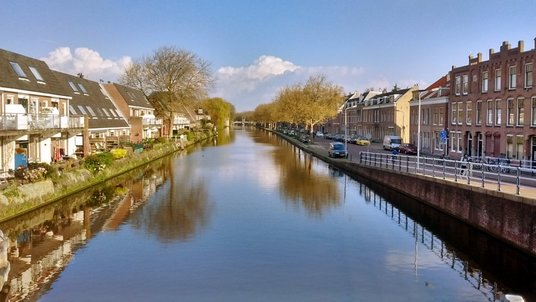
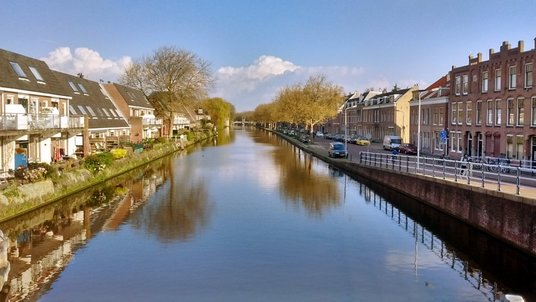
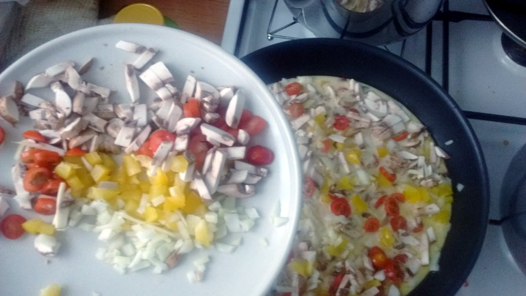
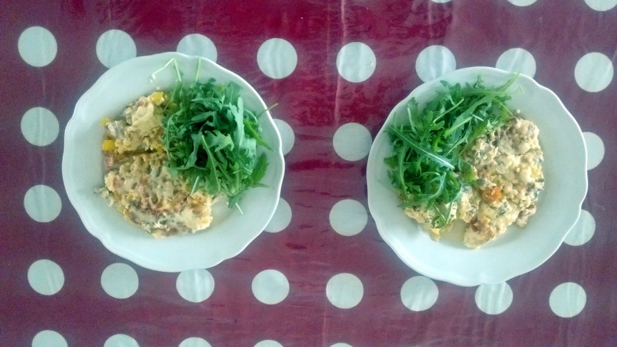

پیادهروی در دلفت-صبح بیست و هشت آوریل دوهزار و پانزده


فلفل دلمه، قارچ، پیاز، و گوجهفرنگی را نگینی خورد میکنیم. مقدارش بسته به سلیقهتان دارد. کفار ژامبون هم میریزند. سه تا تخممرغ را با سه تا قاشق ماست و نصف استکان شیر و کمی نمک با چنگال خوب میزنیم. کمی روغن زیتون کف ماهیتابه میریزیم و داغ که شد، اول مایع را اضافه میکنیم و بعد آرامآرام سبزیجات را.

شعله را کم میکنیم و در ماهیتابه را میبندیم و یک قهوه برای خودمان میریزیم. تا غذا آماده شود بچه را توجیه میکنیم که سبزیجات برای رشدش خوب است. اگر جواب نداد قول میدهیم اگر غذایش را بخورد با هم بازی میکنیم.
بوی خوش سبزیجات که در خانه پیچید در ماهیتابه را برمیداریم و تخممرغ پخته را پشت و رو میکنیم. رویش کمی پنیر میریزیم و میگذاریم آب اضافه غذا بخار شود. با سبزی خوردن و نان تست یا باگت خورده شود.

اولین کنفرانسی است که ارائه شفاهی ندارم مگر اینکه بلایی سر دانشجویم بیاید و ارائه مقاله بیفتد گردن خودم. از دلفت تا دِرِزدن را میشد با هواپیما رفت در دو تکه. راحتترش این بود که با پرواز مستقیم از آمستردام رفت به برلین یا پراگ و از آنجا با قطار بین شهری. بعد از بررسی همهٔ گزینهها راهآهن را انتخاب کردم. حدیث هم گویا دربارهاش داریم. هر چند که چند ساعتی طولانیتر از مسیر هوایی است.
تا اینجا سفر مفیدی بوده. بلیط درجه یک گرفتم به خرج دانشگاه. ارزانتر از بلیط هواپیما میشد و فکر نکنم صدای امور مالی در بیاید. کمی زودتر از خانه زدم بیرون. تکهٔ اول مسیر همیشه نگران کننده است. قطار اول را اگر از دست بدهی خسارت از دست رفتن بقیهٔ سفر میافتد گردن خودت. نزدیک یک ساعت زودتر رسیدم آمستردام. این ایستگاه چقدر بزرگ است و چقدر شلوغ. گشنه بودم. ساندویچ مرغ خریدم و آب معدنی. آدم تکراریای هستم. بعدش چون سردم بود یک ساندویچ گرم تخممرغ هم خریدم و همانجا خوردم. با ترس و لرز چون تخممرغ گاهی به معدهام همراهی نمیکند و منجر میشود به اسهال انفجاری. مرغ را گذاشتم توی کیفم برای نهار. قطار آلمان است و طبعن به موقع حرکت کرد. بار اول بود روی صندلی فرست کلس مینشستم. یک اتاق کوچک است با دو ردیف سهتایی صندلی روبروی هم. فضای کافی بالای سر برای چمدان و یک میز باریک وسط بین دو ردیف صندلی. پنجره بزرگ با دید مناسب. همسفرها دو تا پیرزن خوش تیپ و خندان هلندی. مقالهای را که روحی فرستاده بود ریویو کردم. قطار اینترنت ندارد و امشب از هتل میفرستم. کار ریویو که تمام شد یک ساعتی هم کتاب خواندم تا رسیدیم به هانوفر. یک ساعت و پنج دقیقه زمان داشتم تا قطار بعدی. ساندویچم را روبروی ایستگاه قدمزنان خوردم. چندتایی هم عکس گرفتم به سبک توریستهای ژاپنی که چندتاییشان همان اطراف میپلکیدند. کنجکاو بودم lounge را ببینم. از مزایای بلیطم بود. چندتایی مبل چیده بودند و قهوهساز و نوشیدنیهای خنک. مطمئن نبودم رایگان است یا نه. یک اسپرسو خوردم. بعدش رفتم دستشویی. این را اطمینان داشتم به مفت بودنش. توی دستشویی مریم زنگ زد. فرصت نشد جواب بدهم. از دستشویی برگشتم و یک کاپوچینو هم گرفتم. اینترنت رایگان هم داشت برای نیم ساعت استفاده. با وایبر به مریم پیام دادم. آنلاین نبود. داشت دیر میشد. فنجان کاپوچینو را داغداغ سر کشیدم و رفتم به سمت سکو. گویا نوشیدنیها رایگان بود چون کسی چیزی نگفت.
قطار باز هم سر وقت آمد. یکی نشسته بود روی صندلی من. کوپه خالی بود ولی دوست داشتم روی صندلی خودم باشم کنار پنجره. حس خوبی نداشتم مثل هر وقت دیگری که قرار است حقم را بگیرم. ولی بلندش کردم و خودم نشستم کنار پنجره. یادم رفته بود بود بخش بزرگی از لذت سفر به همسفرهاست. آقای میانسال روبرویی توی چرت بود و خرناسهای کلان میکشید. دو تا پایش را هم تا جایی که میشد از هم باز کرده بود. با توجه به اضافه وزن و شلوار تنگ پارچهایش، منظره زیبایی نبود. جوان کناری -همان که جایم را گرفته بود- صدای موزیک موبایلش چنان بلند بود که به قول سید از دماغش میزد بیرون. چیپس هم میخورد. با سر و صدا. آقای روبرویی هم از خواب بیدار شد و شروع کرد به خوردن. منصف باشم بیصدا. عطسه هم میکرد. با صدای هیولا و بوی باتلاق. اگر راهی بود که بفهمم کدامشان بودند که مدام میچسیدند میتوانستم بدترین همسفرم را انتخاب کنم. ولی به تجربه میدانم که رابطهٔ معناداری بین بوی معده و زیبایی چهرهٔ آدمها وجود ندارد. البته خستگی اواخر سفر را هم باید اضافه کرد که باعث شده حوصلهٔ آدمها را نداشته باشم.
نیم ساعت دیگر از سفر مانده. از ناهار کوچک هانوفر چند ساعتی گذشته و به قول آقای اخوان که به طعنه از روی دست آقای سعدی نوشت «اندرون ناچار مالامال نور معرفت شد باز». فکر نکنم خود سعدی هم خیلی از ته دل گفته باشد اندرون از طعام خالی دار. نقشه کشیدهام که از ایستگاه قطار سالاد و ساندویچ بخرم و توی هتل بریزم به خندق بلا.
یک موج عشقولانه قوی توی ایستگاههای قطار هست. استقبال کنندگان و بدرقهکنندگان، مشغول ماچ و بغل. حال خوشی در جریان است اگر خوب نگاه کنید. حتمن نگاه کنید.
آن قدر سرم شلوغ بود و شبها مغزم پر از نامعلومات نفتی کنفرانس که فرصت نشد چیزی اضافه کنم به این فایل. الان آخرهای مسیر برگشتم. کمی بیشتر از یک ساعت راه است تا آمستردام. هر چه مسیر رفت خوب بود و همه چیز مرتب و طبق برنامه، توی برگشتن جبران شد تا قانون بقای مصیبت (اینجا در مقیاس اروپایی) همچنان پابرجا بماند.
دیروز عصر بعد از کنفرانس پیاده رفتم مرکز شهر. وقت کم بود و بیشتر راه را دویدم. یک فروشگاه اسباببازی پیدا کرده بودم از گوگل. کنارش هم از این بازارهای همهچیزفروشی. برای مادر و دختر کادو خریدم. یک درس بزرگ خودشناسی هم گرفتم. که هرچقدر از اسباببازیها و ابزار تکنولوژیک اطلاع دارم با ابزارآلات و تجهیزات و مواد لازم بهداشتی و آرایشی بیگانهام. از صابون و شامپو و لوسیون گرفته تا عطر و کِرِم و میزامپیلی. توی حمام هتل بیش از حد سوسولِ کنفرانس هم یک موادی بود که بعد از اینکه مالیدم به خودم و کف نکرد، به مریم زنگ زدم تا بفهمم این سوسولبازیها به من نیامده. توی مغازه هم هر چه انواع میزامپیلی را بررسی کردم کمتر به نتیجهای رسیدم.
توی پرانتز بگویم، همین چند دقیقه پیش، در حالی که از شدت دل ضعفه دلم برای فروشندههای پلیس راه تنگ شده بود، بیل یک عدد نان کشمشی تعارف کرد. اجرش با خود عیسی مسیحشان.
صبح با بیل و شان پیاده رفتیم تا ایستگاه قطار. قطار اول به هانوفر سر وقت آمد. با استاد بیل در یک کوپه بودیم. یک ایدهٔ خیلی ساده داشت برای حل مشکلی که با شبیهسازهای کف داریم. وقتم را میخواستم صرف کار دیگری کنم. ولی تا داغ بود مشغول شدم و تا برسیم به هانوفر تمام شد. ناهار از مغازه تایلندی برنج خریدم. چرب بود و کمی خام. گوشت هم که به قول مادرم «شو زیده» (شب زاییده. گویا گوسفندی که شب به دنیا بیاید لاغر و استخوانی است. نمیدانم خرافه است یا واقعیت). قطار سر وقت آمد ولی قطار ما نبود. جای خالی هم نداشت. صندلیهای رزرو شده هم به هم ریخته بودند. آلمانیها کمتر از این اتفاقات در زندگیشان میبینند و سر و صدایشان در میآید. از آلمانیها پرشورتر جوان پاکستانی مهاجر بود که میخواست مأمور ایستگاه را کتک بزند. از این توانایی اروپاییها خوشم میآید. در فاصله دو سانتی متری سر هم نعره میکشند بیاینکه همدیگر را گاز بگیرند. رفتار مرد شرقی و برخورد کوچک و بیموردی که بعدن داخل قطار داشتیم یادم آورد که آزادی -شاید فقط- حق طبیعی آدمهایی است که شایستگیاش را دارند.
قطار بعدی را دو ساعت بعد فرستادند و برگشتیم آمرسفورت. از آنجا هم رتردام بعدش دلفت. تمام طول مسیر کار کردم. آنقدر که از خستگی داشت حالم به هم میخورد. توی ایستگاه رتردام سردم شد. لباس ورزشی آبیام را روی کت قهوهای رسمیام پوشیدم. تیپی بود برای خودش. ایستگاه جدید دلفت خیلی خوب و مرتب شده. پیاده رفتم تا خانه و این سفر هم تمام شد.